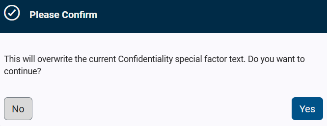

This methodology is based on the Federal Information Processing Standards (FIPS) Publication 199, Standards for Security Categorization of Federal Information and Information Systems and the National Institute of Standards and Technology (NIST) Special Publication (SP) 800-60, Guide for Mapping Types of Information and Information Systems to Security Categories. These standards apply to information within the US federal government and federal information systems.
Federal Information Processing Standards (FIPS) are guidelines and standards for federal computer systems developed by National Institute of Standards and Technology (NIST) in accordance with the Federal Information Security Management Act (FISMA) and approved by the Secretary of Commerce. While FIPS was developed for use by the federal government, many in the private sector voluntarily use them.
The security categories defined by the Federal Information Security Management Act of 2002 (FISMA) are based on the potential impact to an organization if the information and information systems needed by an organization to operate effectively, protect its assets, fulfill its legal responsibilities, maintain its day-to-day functions, and protect individuals were to be compromised. This security categorization is used in conjunction with vulnerability and threat information in assessing the risk to an organization.
 Current Level-
The Current Level widget reflects the user's selections for the SAL categories below.
|
 SAL Categories-
The NIST-60 / FIPS-199 SAL methodology includes the following categories: -
-
-
-
-
Each category contains the following levels: -
-
The loss of confidentiality, integrity, or availability could be expected to have a limited adverse effect on organizational operations, organizational assets, or individuals. -
-
The loss of confidentiality, integrity, or availability could be expected to have a serious adverse effect on organizational operations, organizational assets, or individuals. -
-
The loss of confidentiality, integrity, or availability could be expected to have a severe or catastrophic adverse effect on organizational operations, organizational assets, or individuals. -
-
A level of Very High is not defined in the NIST SP800-53 based standards. It is included in CSET to accommodate the multiple standards available in the tool and is defined as including all controls and all optional control enhancements. -
Users can determine the assessment SAL using one of the following methods: -
Select the appropriate level for the Overall SAL. -
This will be the SAL for the assessment. -
OR select a level for Confidentiality, Integrity, and Availability.
-
CSET will determine the assessment SAL based on the highest level selected between the three categories. -
The Overall SAL will automatically update based on these selections. -
-
CSET will determine the assessment SAL based on the highest level of the three categories (Confidentiality, Integrity, and Availability) for each selected information type. -
The Overall SAL will automatically update based on these selections. -
Note: Low, Moderate, and High correspond with the levels identified by NIST in the NIST SP800-53 Standards, the NIST SP800-60 Volumes 1 and 2 documents, and the Chemical Facility Anti-Terrorism Standards (CFATS) risk-based tiering structure.
|
 Guidance-
Select the linked documents within the guidance section for more information.
|
 Information Types-
Check each applicable information type. -
The SAL Categories will automatically update based on the Confidentiality, Integrity, and Availability levels associated with the information types selected. -
Select the hyperlinked Confidentiality, Integrity, or Availability value to overwrite the corresponding Special Factors text. -
A Please Confirm dialog box displays the following message:  -
Select the Yes button to overwrite the text. -
The special factors text associated with the information type will appear in the Special Factors section. -
Select the No button to cancel and close the dialog box. -
Note: Not all information types are associated with Special Factors.
-
Note: Additional information types are listed within CSET, but are not visible in the figure above.
|
 Questions-
Select an answer for each question listed in the Answer Questions section. -
The SAL Categories will automatically update based on the answers selected.
|
 Special Factors-
Enter any special factors into the Special Factors free text fields. -
Special Factors, described in NIST SP800-60, Volume II, are specific circumstances or characteristics that can influence the determination of impact assignments (Low, Medium, and High) for the selected information type. Special factors can cause an increase or decrease in the assigned impact level. -
|
Made by Dr.Explain, documentation tool
|